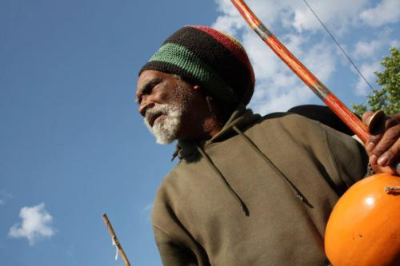

Интервью с Mestre Lua Rasta. Часть 3
Заключительная часть интервью с Mestre Lua Rasta. Яростный манифест во имя свободной капоэйры. Слушайте, пока он там заправляет уличными родами, надо успеть посмотреть на это!
Когда Вы начали устраивать Roda de Terreiro?
«Спасение» продолжается почти пять лет. Процесс начал Dois de Ouro, один из спасителей капоэйры. Потом присоединились Mestre Boca Rica, Mestre Ciro и я. Но старейший в этой истории Dois de Ouro, он всегда был здесь. Тут бывали горячие времена, особенно когда здесь была команда капоэйристов, из-за них вечно были проблемы. Провокаторы, которые вечно толклись на Пелоуриньу. Их было больше, чем капоэйристов. Это были ребята, которые вносили хаос в Роду, вымогали деньги у туристов или просто грабили их. Капоэйристы этого даже не видели. Они просто играли, а потом приходили какие-то типы с шляпой и собирали со всех деньги
Так что на мой взгляд, эти уличные происшествия подставляли под удар развитие академий, и в то время все защищали именно капоэйру академий. Капоэйра улиц была ничем, уличные мастера – никем! Это было уделом бродяг, которые играли без формы, без футболок, потные и вонючие. Правительство хотело „приодеть“ уличных капоэйристов, заставить их носить некую форму и прочую ерунду. Но уличная капоэйра никогда не могла бы этого принять. Такие предложения всегда поступали – Местре Бока Рике, мне – предложение надеть форму и быть как бы упорядоченными правительством. Произошло как с Ассоциацией (Бразильской Ассоциация Капоэйры Ангола): мы верили, что она будет выгодной для кпаоэйры и для капоэйристов. Но мы были разочарованы, потому что каждый президент ассоциации устанавливал свою монополию и развивал с ее помощью свою академию, и с каждым из них у нас были проблемы. Первый, кто ошибся на этом пути, был Mestre João Pequeno, потом Mestre Curió, потом Barba Branca, потом Mestre Mala. И это стало типичным для бразильской истории… Мне 51 год, Mestre Neco 60, Boca Rica почти 70, а ассоциация заставляет нас платить ей. Как долго мы в капоэйре? Годы и годы! Теперь они хотят, чтобы мы платили взносы? Кто должен платить, так это молодежь и филиалы, но не те люди, кто уже находятся на уровне мастеров. И внутри самой капоэйры, ее линий, очень много дискриминации. Кто ведет свою линию от Паштиньи, кто от Бобо, кто от Жуау Пекену… Дискриминация одной капоэйры исключает другую. «Ты ученик Жогу ди Дентру, но я-то ученик такого-то, и твой Жогу ди Дентру ничего не стоит». Это как церковь! По мне, так есть всего одна церковь – Иисуса Христа. «Пока есть хотя бы двое или больше, кто исповедует религию Иисуса, существует церковь!» Людям из одной группы капоэйры сложно уважать другую группу, и это наша сегодняшняя проблема.
В ассоциации “Mr.” Gildo ввел правила, по которым каждый должен быть одет в белый пиджак с синим галстуком. Другими словами, если ты капоэйрист с Аше, я возьму тебя на выступление или презентацию, но если предстоит официальное мероприятие, а у тебя нет нужной одежды, тебя не возьмут! Кто он такой, чтобы делать это? По мне, так он никто в капоэйре! Сегодня многие, кто у руля, пользуются этим, и это провоцирует большие проблемы. В это вовлечена и молодежь. Молодые мастера капоэйры Ангола – кучка придурков! Если вам довелось учиться у них, вы едите хлеб, замешанный дьяволом! Если у такого парня все в порядке с головой – аминь! Но если окажется, что вы против его философии (а философия – это его инструмент манипуляции), если вы не соглашаетесь с каждым словом – он выкинет вас из группы. Вы можете комфортно просуществовать там 10-15 лет, но один прекрасный день – стоит вам не согласиться с чем-то – и вас вышвырнут, вас забанят. Вас все отвергнут, потому что ваш собственный мастер будет говорить на каждом углу, что вы не достигли нужного уровня в его школе, а теперь ведете свои уроки! Это что, капоэйра? В наше время мы знали, что капоэйре учатся в группах, но также во вдорах, и что капоэйра не имеет ничего общего с деньгами.
Сегодня есть группы, которые манипулируют старыми мастерами, они приглашают их в Америку, дают им 200 долларов и запрещают уходить в другую академию, даже если это академия капоэйры Ангола! Мастеру придется остаться там до конца. Они заставляют мастеров давать уроки для гринго, для американцев, и платят им 25 долларов! Что, елси бы мы делали такое со своими мастерами!
Рода на Террейро – единственная открытая рода капоэйры Ангола. Это не просто рода людей, играющих Анголу, это фундамент Анголы. Иногда капоэйрист, практикующий режионал, но уважающий капоэйру Ангола, приходит поиграть, делает движение – и его сразу считают изгоем. Но сюда он приходит и играет независимо от своего силя. Он анголейро – отлично. Если нет, но он играет низко к земле, я даже знать не хочу, что именно он практикует. Мы играем в одежде обычных городских жителей. Если кому-то хочется играть в одежде с логотипом своей группы – ради бога. Но я против ребят, которые приходят по пятнадцать человек, в футболках своей группы. Люди со всего мира приезжают поиграть в нашей роде. Мы говорим, что это капоэйра, исключительная капоэйра, нестандартная капоэйра. Мы играем на улице, мы не носим форму, мы ходим на любую роду. Девушка выходит покрасоваться, в каких угодно штанах, не в форме, в любом, в чем ей хочется – и она играет! Парень приходит оттянуться, в шортах, например. И никто не будет тыкать в него пальцев из-за того, что он не в абаде. Он не будет играть в плавках, он же не дурак, но если он хочет играть босым – почему нет? Ему так комфортно – так пусть играет! Благодаря этой свободе сохраняется дух капоэйры. Стыдно, что это единственная такая рода. Должны быть и другие свободные уличные роды.
Вы занимаетесь изготовлением инструментов?
Да, я начал заниматься этим еще во время своей работы в фольклорной группе. Мне всегда нравилось работать с инструментами. Я всегда разбирал их после выступления, нахоидл сломанные и приносил их к старику Нельсону Малейру. Он был президентом карнавальной группы Flor de Bagdá. Я не упустил возможности поучиться у него. В Рио я работал на фабрике, которая изготавливала в числе прочего виннеы бочки, и этот процесс похож на изготовление атабака. Позже, в Европе, я встретил африканцев, которые делали инструменты, учился у них, потом съездил и в саму Африку, даже дважды – посетил Абиджан, Кот-д'Ивуар, потом еще Индию и Тайланд.
Выходит, вы получили образование, когда уехали из своего района и отправились путешествовать по миру.
Это случилось, когда я покинул академию и вышел на улицу. В группе Канжикиньи наступал такой момент, когда тебе уже нечего было там делать, и мастер указывал тебе путь на улицы, чтобы учиться настоящей жизни. Сегодня все наоборот: местре хочет, чтобы ты все время проводил в стенах академии, в его группке, а если ты и будешь выходить куда-то, то вместе с ним. Ты не можешь просто так играть капоэйру на улице – если мастер узнает об этом, он может даже вышвырнуть тебя из своей школы. Есть много отличных, знаменитых капоэйристов, которые тем не менее боятся играть на улице. Мне это кажется крайне странным, ведь всем известно, что капоэйра зародилась на улицах. В академии ты получаешь базу, первые знания, но все основные знания о капоэйре и о жизни ты получаешь на улице, потому что там ты не знаешь, кто есть кто. Мне кажется, этот страх улицы связан на самом деле со страхом проявить, показать себя, со страхом оказаться в неожиданной ситуации, со страхом, что что-то пойдет не так, произойдет что-то неприятное. И этот риск существует! Человек боится прийти и поиграть на уличной роде, потому что он такой-то и такой Местре или такой-то и такой-то Профессор, и он боится подмочить репутацию. На улице ничего такого нет, никаких титулов, любой может уложить тебя на лопатки и оказаться на земле сам. В роде капоэйры если ты не падаешь, то это потому, что ты не капоэйрист.
Все знают, что лучшие роды в Баии были роды, которые устраивал Mestre Waldemar на Pero Vaz. Он весь день мог быть где угодно, но в 4 часа, когда наступало время роды, он был там, и это был главный оплот всех капоэйристов. Сейчас есть люди, которые хотят превратить капоэйру в занятие для элит, они сами в капоэйре для того, чтобы захватить власть, и мы должны разоблачить их и противостоять им.
Кто для вас пример и авторитет?
Мой дядя, он очень повлиял на меня, помог мне разобраться с инструментами, он очень важен в моей жизни. На улице мой пример — Mestre Canjiquinha, у которого я многому научился, он очень достойный человек. Emilia Biancardi, хотя она и в центре внимания СМИ сегодня. Mestre Caiçara, Mestre Bimba – безусловно. Невероятно важный для меня человек – это Mestre João Pequeno, хоть он и не был моим мастером, но я всегда уважал его. Это капоэйрист, в котором я никогда не замечал алчности.
А из тех, кто сегодня рядом с Вами?
Mestre Bigodinho, Mestre Neco, Marcelo, Ciro и еще целая команда людей, котоыре вкладываются, которые верят в успех того, чем мы занимаемся. Все вместе мы делаем что-то хорошее для капоэйры и нашей культуры.
Что бы Вы хотели добавить к нашей беседе от себя?
В завершение я хочу поднять проблему учеников, которые всю жизнь тренировались со своим мастером, а в один прекрасный день решили отделиться и вести занятия самостоятельно. Вот такой ученик приходит к мастеру и решает прояснить ситуацию. Он говорит: „Местре, я покидаю группу. Но я хочу продолжить вашу работу, в которую я уже вложил достаточно много, продолжить ее с уважением к вам. Отпустите меня, не мешайте мне, ведь капоэйра – это свобода от рабства“. Так почему мы хотим поработить своих учеников? Хорошо, если я всю жизнь буду в одной группе, если я буду чувствовать себя там свободным. А капоэйристы действительно должны объединиться, чтобы капоэйра была сильной. А что получается: «Не ходи на роду к Луа или к Марселу, у них там одни курильщики. Не ходи к тому и к этому, они вообще не анголейру, они играют с тремя беримбау… Что ыт удмаешь о Местре Луа? А о Местре Сиро?» Уличный мастер никогда не был ни мастером Анголы, ни мастером Режионал. Кем тогда? Воплощением капоэйры? Спросите мастеров Курио или Жарараку об их жизни: они расскажут, что они мастера улиц! Мы забыли, что в прошлом именно мастера улиц отвечали за опулярность капоэйры, но сегодня они все засели в своих академиях.
Местре Луа Раста – не принадлежит Анголе или Режионалу! И не надо дискриминации! Я капоэйрист! Я уличный капоэйрист!
A. C. Quilombo Cecília
Cultural resistance
Источник: PortalCapoeira
Перевод на английский: Shayna McHugh
Перевод на русский: BotaFogo
www.capoeira-connection.com/capoeira/downloads/Interview_Lua.pdf